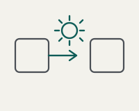
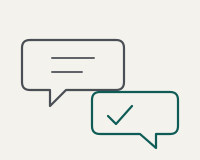
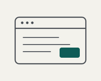
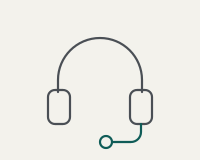

Services
What we build.
Four things, done well. Small engagements, fixed quotes, and no lock-in.
Workflow automation
We connect the tools you already use so data stops being retyped. Reminders, intake, follow-ups, and moving information between systems happen on their own.
- Who it's for
- Practices and offices losing hours to copy-paste work, phone reminders, and chasing follow-ups by hand.
- What it looks like
- Automatic appointment reminders. Intake forms that land where they belong. Two systems that finally talk. You stop doing the step; it just happens.
- Typical timeline
- One to two weeks from the first conversation.
- Starting from
- $1,500

AI assistants
We set up assistants that answer common questions, draft documents, and triage incoming messages. Everything is deployed carefully and privacy-first, with no client data sent to consumer AI tools.
- Who it's for
- Anyone answering the same questions over and over, or drowning in a shared inbox.
- What it looks like
- An assistant that drafts replies for you to approve. A tool that sorts messages before they reach you. A first-pass answer to the questions you get every day.
- Typical timeline
- One to three weeks, depending on how much we're wiring in.
- Starting from
- $2,500

Website design
We build clean, fast websites that patients and clients can actually use. And we keep them maintained, so they don't quietly break six months later.
- Who it's for
- Practices and professionals stuck with a slow, dated site, or no site at all.
- What it looks like
- A site that loads fast and reads well on a phone. Simple online booking. Content you can update without calling anyone.
- Typical timeline
- One to two weeks for a standard site.
- Starting from
- $1,200

Ongoing support
We stay on call for the small problems that come up every week. Think of it as your on-call technical person, without the salary.
- Who it's for
- Teams who want someone to call when something breaks, without hiring full-time.
- What it looks like
- A monthly retainer. We fix what breaks, make small changes, and keep your automations running.
- Typical timeline
- Ongoing. Cancel whenever; there's no lock-in.
- Starting from
- $300 per month

Let's talk
Not sure which one you need?
That's what the free consult is for. Tell us what's eating your time and we'll point you at the thing worth doing, or tell you there isn't one.